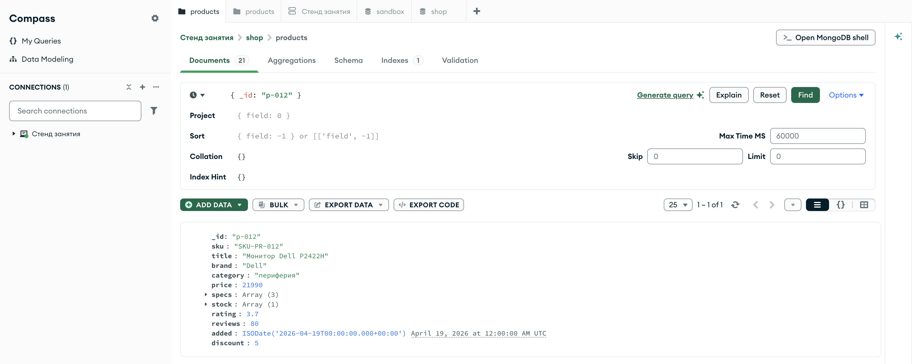

Справочник по MongoDB · модуль 1 · подключение и первые данные
Глава 1.2
Документ
и BSON
Документ — единица хранения в MongoDB: его кладут и достают целиком. Разберём, из чего он состоит, какие типы значений в нём бывают, почему он хранится не как текст и что за поле _id появляется в каждом документе само.
«Документ читают и меняют целиком.»
- Категория
- Модель данных
- Уровень
- Начальный
- Связанные темы
- Вставка, типы в фильтрах, проекция
- Зачем это знать
- Понимать, что именно лежит в базе и почему
"65000"и65000— разные значения
Как запускать примеры этой главы
docker compose run --rm reset или скрипт из главы 1.0, §6.lessons/ch1_2.py — пример вставляется в конец файлаlessons/ch1_2.rb — пример вставляется в конец файлаlessons/ch1_2.go — пример внутрь скобок в конце main, функции и типы — выше mainlessons/ch1_2.cpp — пример внутрь скобок в конце main, функции — выше maincd lessons, затем python ch1_2.pycd lessons, затем python3 ch1_2.py · в Docker: docker compose run --rm python lessons/ch1_2.pycd lessons, затем ruby ch1_2.rb · в Docker: docker compose run --rm ruby lessons/ch1_2.rbcd lessons, затем go run ch1_2.go · в Docker: docker compose run --rm go lessons/ch1_2.gocd lessons, затем g++ -std=c++17 ch1_2.cpp -o prog $(pkg-config --cflags --libs libmongocxx1) && ./prog · в Docker: docker compose run --rm cpp lessons/ch1_2.cpp_id и время создания у вас будут другими: их выдаёт сервер в момент вставки.§1Документ: пары «поле — значение»
Документ — это набор пар «поле — значение». Значением может быть число, строка, дата, массив или другой документ. Поэтому карточка товара помещается в один документ целиком, а не разносится по шести таблицам.
Возьмём настоящий товар из нашей базы:
_id: "p-012",string
sku: "SKU-PR-012",string
title: "Монитор Dell P2422H",string
brand: "Dell",string
category: "периферия",string
price: 21990,int32
specs: ["24\"", "IPS", "75 Гц"],array
stock: [{ warehouse: "Екатеринбург", qty: 0 }],array of object
rating: 3.7,double
reviews: 80,int32
added: ISODate("2026-04-19T00:00:00Z"),date
discount: 5int32
}
В этом документе видны три свойства модели. specs — массив строк, он лежит прямо в документе: отдельной таблицы «характеристики» нет. stock — массив документов, вложенность может быть любой глубины. Поле discount есть у этого товара и может отсутствовать у соседнего — коллекция это допускает.
§2BSON: не текст, а двоичная запись
Выглядит документ как JSON, но хранится иначе. Формат называется BSON — Binary JSON, двоичная запись документа. Отличия от JSON:
int32, int64, double и decimal128, а ещё есть дата, двоичные данные и ObjectId — типов, которых в JSON нет.точностьСледствие для практики: тип значения хранится вместе со значением. Строка "21990" и число 21990 — разные значения, и запрос «дороже 20000» найдёт только второе. Разбирается это в модуле 2, но возникает здесь, на уровне хранения.
§3Типы значений
Полный список типов BSON длинный, но в работе встречается десяток. Вот они — с тем, как тип называется в базе и во что превращается в Python.
| Тип BSON | Псевдоним | В Python | Где у нас встречается |
|---|---|---|---|
| String | "string" | str | title, category |
| 32-bit integer | "int" | int | price, reviews |
| 64-bit integer | "long" | int | большие счётчики, время в миллисекундах |
| Double | "double" | float | rating |
| Decimal128 | "decimal" | Decimal128 | деньги там, где нельзя терять копейки |
| Boolean | "bool" | bool | payment.paid в заказах |
| Date | "date" | datetime | added, created |
| Array | "array" | list | specs, items |
| Object | "object" | dict | delivery, payment |
| ObjectId | "objectId" | ObjectId | _id, если его не задали сами |
| Null | "null" | None | user_id в событиях без пользователя |
Проверить тип каждого поля можно прямо из Python — драйвер уже перевёл значения в объекты языка:
one = db["products"].find_one({"_id": "p-012"}) for name, value in one.items(): print(f"{name:10} {type(value).__name__}")
auto doc = products.find_one(make_document(kvp("_id", "p-012"))); for (const auto& element : doc->view()) { std::cout << std::left << std::setw(10) << element.key() << bsoncxx::to_string(element.type()) << std::endl; }
var raw bson.Raw products.FindOne(ctx, bson.D{{Key: "_id", Value: "p-012"}}).Decode(&raw) elements, _ := raw.Elements() for _, element := range elements { fmt.Printf("%-10s %s\n", element.Key(), element.Value().Type) }
one = products.find({ "_id" => "p-012" }).first one.each { |name, value| puts format("%-10s %s", name, value.class) }
_id str sku str title str brand str category str price int specs list stock list rating float reviews int added datetime discount int
_id string sku string title string brand string category string price int32 specs array stock array rating double reviews int32 added date discount int32
_id string sku string title string brand string category string price 32-bit integer specs array stock array rating double reviews 32-bit integer added UTC datetime discount 32-bit integer
_id String sku String title String brand String category String price Integer specs Array stock Array rating Float reviews Integer added Time discount Integer
У Python одно целое число, у BSON их два: int32 и int64. При записи драйвер выбирает подходящий сам, при чтении оба становятся int. Разница вылезает в одном месте — в запросах по типу {"$type": "int"}, где int и long уже не одно и то же.
§4Сколько весит документ
Размер документа считает сама база — оператором $bsonSize. Это полезная привычка: понимать, во что обходится хранение, до того, как документов станет миллион.
db.products.aggregate([ { $match: { _id: { $in: ["p-012", "p-020"] } } }, { $project: { title: 1, size: { $bsonSize: "$$ROOT" } } } ])
[
{ _id: 'p-012', title: 'Монитор Dell P2422H', size: 314 },
{ _id: 'p-020', title: 'Кабель USB-C 2 м', size: 323 }
]
У кабеля название вдвое короче, а документ на девять байт тяжелее. Вес определяет не текст, а структура: число полей, элементов массива и вложенных объектов. Служебные байты длины и типа тоже занимают место.
Предел в 16 МБ на документ выглядит недостижимым, но он ставит границу подходу «положим всё в один документ»: список из миллиона заказов клиента в его карточку не поместится. Где проходит эта граница на практике — тема отдельного разговора о вложении и ссылках.
§5Поле _id
В каждом документе есть поле _id — первичный ключ. Правила у него три:
- оно обязательное: если вы его не указали, сервер добавит его сам;
- оно уникальное внутри коллекции: индекс по
_idсоздаётся автоматически и снять его нельзя; - его нельзя изменить у существующего документа — только удалить документ и записать заново.
Значением _id может быть что угодно: строка, число, дата, вложенный документ. В нашей базе это осмысленные строки — "p-012", "o-0001", "c-003": по такому ключу видно, что перед вами, ещё до чтения документа. Если же _id не задать, сервер поставит ObjectId — 12-байтовый идентификатор.
result = box.insert_one({ "sku": "SKU-AC-022", "title": "Коврик для мыши XL", "price": 1290, }) print("присвоенный _id:", result.inserted_id) print("тип:", type(result.inserted_id).__name__) print("время создания:", result.inserted_id.generation_time)
auto result = box.insert_one(make_document( kvp("sku", "SKU-AC-022"), kvp("title", "Коврик для мыши XL"), kvp("price", 1290))); auto oid = result->inserted_id().get_oid().value; std::cout << "присвоенный _id: " << oid.to_string() << std::endl; std::cout << "время создания: " << oid.get_time_t() << std::endl;
res, err := box.InsertOne(ctx, bson.D{ {Key: "sku", Value: "SKU-AC-022"}, {Key: "title", Value: "Коврик для мыши XL"}, {Key: "price", Value: 1290}, }) if err != nil { log.Fatal(err) } oid := res.InsertedID.(bson.ObjectID) fmt.Println("присвоенный _id:", oid.Hex()) fmt.Printf("тип: %T\n", oid) fmt.Println("время создания:", oid.Timestamp().UTC())
result = box.insert_one({ "sku" => "SKU-AC-022", "title" => "Коврик для мыши XL", "price" => 1290 }) oid = result.inserted_id puts "присвоенный _id: #{oid}" puts "тип: #{oid.class}" puts "время создания: #{oid.generation_time}"
присвоенный _id: 6aa71d38b90e39ca06d0652f тип: ObjectId время создания: 2026-09-13 22:01:28+00:00
присвоенный _id: 6aa720f5a9158e554300ecd1 время создания: 1789337845
присвоенный _id: 6aa720b3dc05457956c79cee тип: bson.ObjectID время создания: 2026-09-13 22:16:19 +0000 UTC
присвоенный _id: 6aa71d3c542d887c86b10f0e тип: BSON::ObjectId время создания: 2026-09-13 22:01:32 UTC
§6ObjectId по байтам
ObjectId — 12 байт с фиксированной структурой. Записывается он как 24 шестнадцатеричных знака: каждый байт — два знака. Разберём по байтам один из полученных выше — 6aa08c51503a4f190a669c88.
generation_time: дата создания лежит в самом ключе.Из устройства следуют два практических вывода. Первый: ObjectId примерно упорядочен по времени — сортировка по _id почти совпадает с сортировкой по дате создания, и отдельное поле «когда создан» иногда не нужно. Второй: ObjectId выдаёт время создания записи — это не всегда желательно, если идентификатор виден снаружи, в адресной строке.
В запросе {"_id": "6aa08c51503a4f190a669c88"} база ищет строку и не находит ничего: в документе лежит значение типа ObjectId. Идентификатор из адресной строки нужно превратить в объект: from bson import ObjectId, затем {"_id": ObjectId(raw)}. Это одна из самых частых ошибок в первом веб-приложении на MongoDB.
§7Одна коллекция — разные формы
Коллекция не требует, чтобы документы были одинаковыми. Схемы у неё нет — по умолчанию сервер примет документ любой формы. В нашей коллекции товаров это видно сразу:
price: 67900
discount: 10
specs: [3 элемента]
price: 18990
// поля discount нет
specs: [2 элемента]
price: 790
stock: [2 склада]
specs: [2 элемента]
Это свойство даёт свободу — новое поле добавляется без миграции всей коллекции, — и оно же создаёт главную опасность документной базы: опечатка в имени поля не будет замечена. Запись salaryy вместо salary просто создаст новое поле, и никто не возразит. Как поставить базе правила и заставить её проверять форму документа, разберём в главе 3.1.
§8Типы в Compass
Тот же документ в Compass. Тип здесь виден по тому, как записано значение: строки в кавычках, числа без кавычек, дата — как ISODate с расшифровкой рядом, массив — как Array (3) со свёрнутым содержимым.

shop.products, фильтр { _id: "p-012" } — тот самый документ из §1, 12 полейЯвно тип пишется в табличном виде — это третья кнопка в правом верхнем углу списка. Там Compass ставит тип в шапку каждого столбца: _id String, price Int32, rating Double. И если в столбце встретится несколько типов, он покажет их списком — так опечатка вроде цены, записанной строкой, находится глазами, без единого запроса.
§9Частые ошибки
| Что написано | Что происходит | Как правильно |
|---|---|---|
{"price": "21990"} | Записано строкой. Сравнения и суммы по этому полю работать перестанут | Приводить к числу до записи: int(value) |
{"_id": "6aa08c…"} для ObjectId | Пустой результат: строка не равна ObjectId | {"_id": ObjectId("6aa08c…")} |
Попытка изменить _id | WriteError: would modify the immutable field '_id' | Удалить документ и вставить заново с новым ключом |
Дата записана строкой "2026-04-19" | Сортировка сработает случайно, а сравнение по датам — нет | Писать datetime, база сохранит его типом date |
| Массив на десятки тысяч элементов в документе | Приближение к пределу 16 МБ и медленное чтение целиком | Выносить растущий список в отдельную коллекцию |
| Что написано | Что происходит | Как правильно |
|---|---|---|
kvp("price", "21990") | Записано строкой: kvp выводит тип из аргумента | Передавать число: kvp("price", 21990) |
get_string() на числовом поле | bsoncxx::exception: requested type does not match the underlying type: expected element type k_string | Смотреть element.type() или брать get_int32() |
| Чтение поля, которого нет | cannot get int32 from an uninitialized element: view is invalid | Сначала проверить: if (doc["discount"]) … |
string_view пережил документ | Мусор в строке: view ссылается на освобождённую память | Копировать в std::string, если значение нужно дольше документа |
| Массив на десятки тысяч элементов в документе | Приближение к пределу 16 МБ и медленное чтение целиком | Выносить растущий список в отдельную коллекцию |
| Что написано | Что происходит | Как правильно |
|---|---|---|
Price string при int32 в базе | error decoding key price: cannot decode 32-bit integer into a string type | Тип поля структуры должен совпадать с типом в BSON |
| Поле структуры со строчной буквы | Поле молча не заполняется и не записывается | Экспортируемые имена с большой буквы плюс тег bson:"price" |
bson.M там, где важен порядок | multi-key map passed in for ordered parameter | bson.D хранит порядок ключей; bson.M — обычная карта |
Строка вместо bson.ObjectID | Пустой результат: строка не равна ObjectID | bson.ObjectIDFromHex(raw) и фильтр по полученному значению |
| Массив на десятки тысяч элементов в документе | Приближение к пределу 16 МБ и медленное чтение целиком | Выносить растущий список в отдельную коллекцию |
| Что написано | Что происходит | Как правильно |
|---|---|---|
{ "price" => "21990" } | Записано строкой. Сравнения и суммы по этому полю работать перестанут | Приводить к числу до записи: value.to_i |
Строка вместо BSON::ObjectId | Пустой результат: строка не равна ObjectId | BSON::ObjectId.from_string(raw) |
| Символ вместо строки в фильтре | { sku: "…" } и { "sku" => "…" } — разные ключи для драйвера | В фильтрах и документах ключи пишут строками |
| Чтение поля, которого нет | Возвращается nil, ошибки нет | Проверять на nil до арифметики, иначе NoMethodError вылезет дальше по коду |
| Массив на десятки тысяч элементов в документе | Приближение к пределу 16 МБ и медленное чтение целиком | Выносить растущий список в отдельную коллекцию |
§10Проверьте себя
Чем BSON отличается от JSON, если на экране они выглядят одинаково?
BSON — двоичный формат: он хранит тип вместе со значением, знает длину каждого документа и строки и поддерживает типы, которых в JSON нет, — дату, ObjectId, двоичные данные, несколько числовых типов. JSON — это текст, в котором все числа одинаковы, а даты приходится изображать строками.
Мы не указали _id. Что окажется в документе?
ObjectId — 12 байт: 4 байта времени, 5 случайных, 3 счётчика. Его сгенерирует драйвер или сервер, а вернётся он в result.inserted_id.
Можно ли в одной коллекции держать документы с разным набором полей?
Да, по умолчанию сервер не проверяет форму. Это удобно при развитии проекта, но означает, что опечатку в имени поля никто не заметит: появится новое поле. Проверку формы включают отдельно — правилом $jsonSchema.
Почему у документа с более коротким названием размер оказался больше?
Потому что размер определяется структурой, а не длиной текста. У товара p-020 в массиве stock два склада вместо одного, а каждый элемент — это вложенный документ со своими служебными байтами длины и типов.
Сортировка по _id — то же самое, что сортировка по дате создания?
Почти, если _id — это ObjectId: первые четыре байта хранят время с точностью до секунды. Внутри одной секунды порядок определяет счётчик, а на нескольких серверах он может разойтись. Если порядок важен точно, заводите собственное поле с датой.
§11Шпаргалка
col.find_one({"_id": "p-012"})
# mongosh:
db.products.findOne({_id:"p-012"})
{$project: {size:
{$bsonSize: "$$ROOT"}}}
# предел — 16 МБ
from bson import ObjectId
col.find_one(
{"_id": ObjectId(raw)})
oid.generation_time
# mongosh:
_id.getTimestamp()
col.find_one(make_document(
kvp("_id", "p-012")))
// поля: doc->view()["title"]
{$project: {size:
{$bsonSize: "$$ROOT"}}}
// предел — 16 МБ
#include <bsoncxx/oid.hpp>
bsoncxx::oid oid{raw};
col.find_one(make_document(kvp("_id", oid)));
oid.get_time_t()
// секунды от эпохи
var doc bson.M
col.FindOne(ctx,
bson.D{{Key: "_id", Value: "p-012"}}).
Decode(&doc)
{$project: {size:
{$bsonSize: "$$ROOT"}}}
// предел — 16 МБ
oid, err := bson.ObjectIDFromHex(raw)
col.FindOne(ctx,
bson.D{{Key: "_id", Value: oid}})
oid.Timestamp()
// возвращает time.Time
col.find({ "_id" => "p-012" }).first
# mongosh:
db.products.findOne({_id:"p-012"})
{$project: {size:
{$bsonSize: "$$ROOT"}}}
# предел — 16 МБ
oid = BSON::ObjectId.from_string(raw)
col.find({ "_id" => oid }).first
oid.generation_time
# возвращает Time в UTC
Итог главы
Документ — это пары «поле — значение», где значением может быть массив или другой документ; хранится он в двоичном формате BSON, который помнит тип каждого значения и длину каждой части. Поле _id есть всегда: заданное вами или сгенерированный сервером ObjectId, в первых байтах которого лежит время создания. Форма документов внутри коллекции может различаться: это даёт свободу при развитии проекта и оставляет опечатку в имени поля незамеченной. В следующей главе начнём класть документы в базу сами.